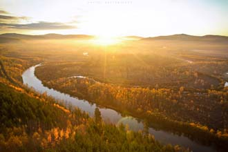
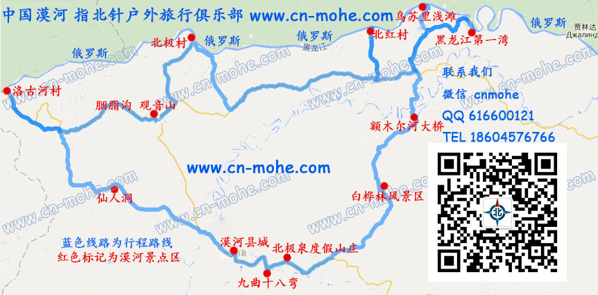
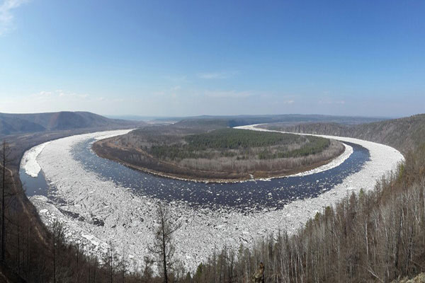
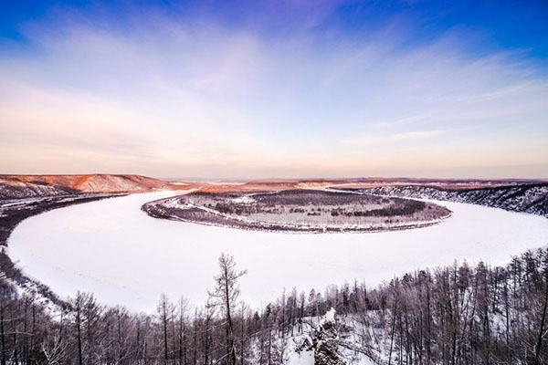

路线总汇
大环线 漠河最北景点 五日深度游
- 漠河县城→九曲十八湾→北极泉→白桦林→阿木尔河→龙江第一湾→乌苏里浅滩→边境线→北红村→驯鹿部落→北极村→圣诞滑雪
村→最北哨所→最北邮局→最北点→沙洲岛→界碑→观音山→胭脂沟→洛古河村→仙人洞→五六火灾纪念馆→松苑公园



大环线 漠河所有景点 五日深度游
承诺：全程无购物,纯自由行！
- 线路概括
-
全国各地漠河集合啦！接机接站→漠河县城→九曲十八湾→北极泉→白桦林→额木尔河→龙江第一湾→乌苏里浅滩→边境
线→北红村→驯鹿部落→北极村→圣诞滑雪村→最北哨所→最北邮局→最北点→沙洲岛→界碑→观音山→胭脂沟→火灾纪
念馆→松苑公园→送机送站
- 线路简介
- DAY1： 漠河县集合安排车子接机接站，入住酒店休息
DAY2：漠河起→九曲十八湾→北极泉→白桦林→额木尔河→龙江第一湾→乌苏里浅滩→边境线→北红村
DAY3：北红村→驯鹿部落→北极村
DAY4：北极村→圣诞滑雪村→最北哨所→最北邮局→最北点→沙洲岛→界碑→观音山→胭脂沟→洛古河村→漠河县城
DAY5：漠河县城→北极星广场→火灾纪念馆→松苑公园→送机送站
- 旅行路书
- 
- 门票费用
-
北极村门票 60元/人
胭脂沟、观音山 50元/人
九曲十八弯 50元/人
黑龙江第一湾/乌苏里浅滩 50元/人
圣诞村 30元/人
驯鹿部落 20元/人
门票优惠：学生半价，70岁以上、记者、军官、残疾免票。
- 详细行程
- DAY1：漠河县集合安排车子接机接站，入住酒店休息
- 住宿：漠河县城双人标间，三星酒店，含早餐。WiFi覆盖
里程：约5公里
位置：漠河县城
行程：自由活动 。首先您下飞机或火车后不用着急联系我们，我们的司机师傅会手持接机接站牌在出口处等您！
先送您去预订好的酒店休息。到漠河的交通工具一般都是中午或者下午到，旅途那么劳累，稍加休息一下，漫步中国最
北的边陲小镇，体验东北的风土人情，先闲逛一下啦，养好精神明日出发！顺便说一句你想吃什么晚餐吩咐我们给您预订就
是啦！每个地方都有自己的特色地方菜啦！
关于您在漠河需要入住的酒店或宾馆需要的档次或者价位请参考下面的紫色酒店宾馆链接介绍，或者联系我们提出您的
具体要求，我们会提前根据您的要求给您预订好下榻的宾馆酒店！
- 点击查看漠河县城酒店介绍
- DAY2：漠河起→九曲十八湾→北极泉→白桦林→额木尔河→龙江第一湾→乌苏里浅滩→边境线→北红村
- 住宿：北红村，双人标间，独卫独浴。农家院火炕。WiFi覆盖
里程：约260公里
位置：北红村
行程：新的一天开始啦！早上8点起床吃早餐啦，一般预订的漠河县城内宾馆酒店都是包含早餐的，如果你不习惯的话可以叫
司机师傅带您出去吃顿称心可口的不过早餐的费用是您自理的漠河的早餐也很便宜的。一年四季在于春，一日三餐在于早
啦！早饭要吃好啦！您满意为止！8点30分开始我们的找北之旅吧，一路向北，出发！
大约9点整我们就可以达到第一站，阿木尔河的九曲十八湾，远望冬季的阿木尔湿地一片银装素裹的美景。冬季的九曲十
八弯到底有多美？为您奉上冬季九曲十八弯的美景！ - 然后途中路过原始白桦林森林，在冻结的阿木尔河上来个冰上飞奔，有缘的话可以看到雾凇哦。一路向着最北我 们来
了，中途看看华夏大地的原始针叶森林、白桦林等美景，如果你喜欢这原生态的自然美景那么叫停师傅拍照吧！司机师傅随
时都会为您停车并且为您拍照留念，这是我们的要求么。所有的司机师傅不但从事本行业年限都很高，随身练就的拍摄技术
也是很赞的啦！
大约正午12点整就可以到达乌苏里浅滩，抵达后寻找中国最北点。对，在这里你就找到北了。现在已经冰封十里，江水
在严寒的天气下早已形成厚厚的冰层，有幸的话你能看见江面上的渔民在那里凿冰捕鱼的景象。若您已走遍神州大地，您是
来找北的话，那么恭喜您找到北啦！请记住这里是纬度53°33′ 。踏踏界江主航道上的真正最北点，这个时候中俄的界江已
经冰封了，有性趣的话咱们可以尝试一下一脚“中国”一脚“俄罗斯”的滋味。
中华人民共和国国境线最北纬度的国境就是这里啦，也许您会问不是北极村最北么？我要告诉您其实不是的乌苏里浅滩是地
理位置最北点，北极村是最北村庄，由于北极村的名气较大一度被当成了中国最北！
只要半个小时就可以从乌苏里浅滩到达龙江第一湾景区，乌苏里浅滩是一个完美的Ω形江湾，这个长度达30公里的神奇大湾
就是黑龙江第一湾又称之为：“日月江山”抵达后徒步登998阶台阶前往龙江第一湾观景台，远眺早已银装素裹的黑龙江第
一湾。龙江第一湾↓ - 
- 
- 争取在下午5点左右天黑之前到达北红村[大草甸子村]，游览原始村庄，你能想象到原始森林的深处有着这样一个小村庄
吗，全村仅有的320人，日出而作日落而息，每天过着面朝黄土背朝天的景象，在这里没有城市的嘈杂，没有高楼，就连生
活用电也是刚接入没有多久的，偶尔通信信号不好时，还要站在高处接打电话！看看村里土坯房，看看村
里的小路，看看村里的人们每天怎样生活在这大山里面的。晚上北红村夜空美丽，用很长的曝光时间来拍满天星斗。北斗七
星、猎户星座、白鸟星座（大十字，就是圣斗士冰河的那个）全部清晰可见；在村子空地上放烟火（出发时在县城准备），
庆祝只有我们才拥有的欢腾。
您是否体验过农家火炕？是否住惯了舒服的大床，那么来一次温暖火炕的体验吧！
今日住宿推荐火炕，北红村由于较原始没有档次较高的宾馆只有农家院。若你住不惯那么也有双人标间价格都差不多
，下面紫色的文字链接里有北红村的农家院展示！
- 点击查看住宿介绍
- DAY3：北红村→驯鹿部落→北极村
- 住宿：北极村，双人标间，独卫独浴。农家院火炕。WiFi覆盖
里程：约210公里
位置：北极村
行程： 清晨的北红村庄，伴着袅袅炊烟，中国最北最原始的村庄开始苏醒了，喜欢摄影的朋友可以尽兴的发挥，大约10点后
集合出发，北红村一路向西，就是北极村，全程130多公里，穿越森林，大约行车时间3~4小时左右。 途经【中国北极圣诞村】。中国北极圣诞村位于漠河北极村二十九站，与俄罗斯隔江相望。走进中国唯一的童话世界圣诞村，集森林、 冰雪、 界江、极光于一身，参观圣诞老人之家、圣诞广场、圣诞邮局、圣诞礼品店、圣诞滑雪场、童话世界、白雪公主乐园、驯鹿园等景点。 中午到达北极村，午餐后乘坐冰雪上的马拉爬犁畅游大界江、大森林、大冰雪！运气好的话我们可以碰到冬季捕鱼，安排您再冰封厚1米左右的黑龙江上观赏如何冬季捕鱼（马拉雪橇费用自理）马拉雪橇全程大约3公里，没有具体时间限制，主要看您沿途上拍照的时间长短然后去北极沙州、【中国的北极点】。 参观【138号国界碑】、【中国最北之家】。在北望垭口广场上看见，漠河-上海相距2470公里，最北漠河与最南曾母暗沙相距5664公里，距离哈尔滨918公里。这里的冰糕都是摆在露天卖的。室外零下好几十度的，连个冰箱也不需要了。冰糕确实好吃。大冬天的，在室外吃着冰糕，那个畅快，一个“爽”字概括。开始探询一切“号称”最北的玩点。中国最北之家、中国最北的邮局、最北的哨所、最北的乡政府、最北的学校、最北的卫生所、最北的地震观察站、最北的派出所、最北的供销社（这里面还保持着上世纪六七十年代的感觉），还有最北的厕所，呵呵。当然还可以人为制作最北的雪地里的三脚架、最北的眼镜等等等等。到这里给你的亲人和朋友寄去一张明信片，带上你的祝福捎去你在最北的平安。 今日住宿推荐火炕，若你住不惯那么也有双人标间价格都差不多，同时村内可根据您的需要预定星级宾馆，木质别墅！下面紫色的 文字链接是宾馆和农家院的介绍！
- 点击查看住宿介绍
- DAY4： 北极村→圣诞滑雪村→最北哨所→最北邮局→最北点→沙洲岛→界碑→观音山→胭脂沟→火灾纪念馆→松苑公园→
- 送机送站
- 住宿：今日无住宿 里程：约125公里 位置：漠河县 行程：早上07：30左右徒步到北极村黑龙江边看日出，黑龙江日出这个时候是拍照的好时机！这时候总算感受到北国的凛冽了。鼻子里仿佛有了胶水般不自在，眼睫毛上开始挂了冰粒子。在竖有神州北极大石碑的广场上，在千里冰封白雪覆盖的黑龙江上，看着那太阳从山的脊梁上升起来，终于明白了“破晓”一词的涵义。不容易啊，中国最北的日出，还是相当美的。08：30早餐后前往观音山、胭脂沟。林海观音佛像，顺便说一下他是跟南海许愿观音相对应的，虽然没有人家的高大，但是谁又能和最北观音相聘美那？坐落在海拔660米，高10.8米的三面观音佛像，求平安、求智慧、求财源。凡是有心愿的就请来吧。参观最北的胭脂沟淘金遗址、参观创办金矿鼻祖李金镛的祠堂。顺便说一句老金钩淘金就是电视剧闯关东的原型哦，黑龙江边的淘金指的就是这里哦！然后我们返程来到漠河县城最高点北极星广场，当地人称之为“西山广场”、松苑公园、五六火灾纪念馆等。松苑公园是漠河县城中独一无二的原始森林公园，占地面积5公顷，大火四不少之一，当地人称之为福地。外地游客游览此处前往增福气。集体午餐！ 留出自由活动的时间，让您在看看中国最北的边陲小镇。安静而美好！下午或晚上我们会根据你具体预定的飞机或火车送机送站。跟祖国边陲小跟祖国边陲小镇说声再见了。
- 关于包车说明
- 漠河县实际居住人口只有3万多人口，由于人口较少，漠河旅游还没有形成一定的规模和产业结构，现今无一家具备线 路开发和旅行交通工具统一购置能力的公司，全部都是采用旅行网站或旅行社同本地车辆合作的方式，所以来漠河旅游只能 自驾游或者包本地从事旅游行业的个体车辆，线路中多野外人烟稀少的原始森林，所以车辆必不可少！ 指北针户外旅行俱乐部合作车辆车型较多，从5座轿车到15座商务车都有合作，这里仅做部分展示。请您联系我们您的人数和具体要求，我们会根据您的要求为您推荐最经济实惠的车辆。
- 点击查看旅游包车车型
- 关于包车定金
- 包车定金支付是对于车辆先期预订以及司机师傅提前安排工作时间行程的一种保障。包车定金为人民币200元，包含接送站、接送机以及您在漠河整个旅行的全过程。在您结束您的旅行后支付剩余车辆费用即可！请您先通过下方的联系方式联系我们咨询您旅行路线的车辆费用后，通过以下方式进行支付，支付完毕请您及时通知我们您的支付方式、支付时间、支付金额以及您的姓名或称呼，到漠河的具体日期、车次或航班，我们将提前通知司机师傅安排好时间进行接机接站！
- 点击查看支付方式
- 最后为您推荐漠河当地特色菜，土特产
- 点击查看漠河特色菜土特产
如果对行程有不理解的地方，咨询旅游线路、费用等相关资讯请联系我们
点击查看联系我们的方式

- 地址: 黑龙江省漠河县朝林路 电话: 18604576766 邮箱: cn_mohe@163.com
版权所有 © 2012-2016 指北针官方网站 www.cn-mohe.com 保留所有权利 黑ICP备16000953号
黑ICP备16000953号 
新浪微博-

微信公共平台